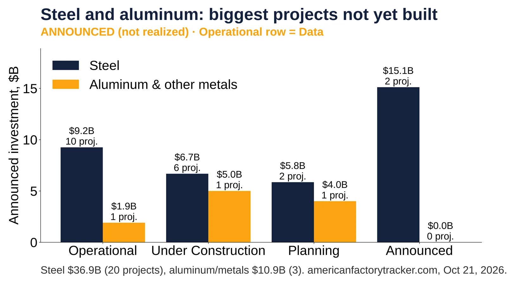
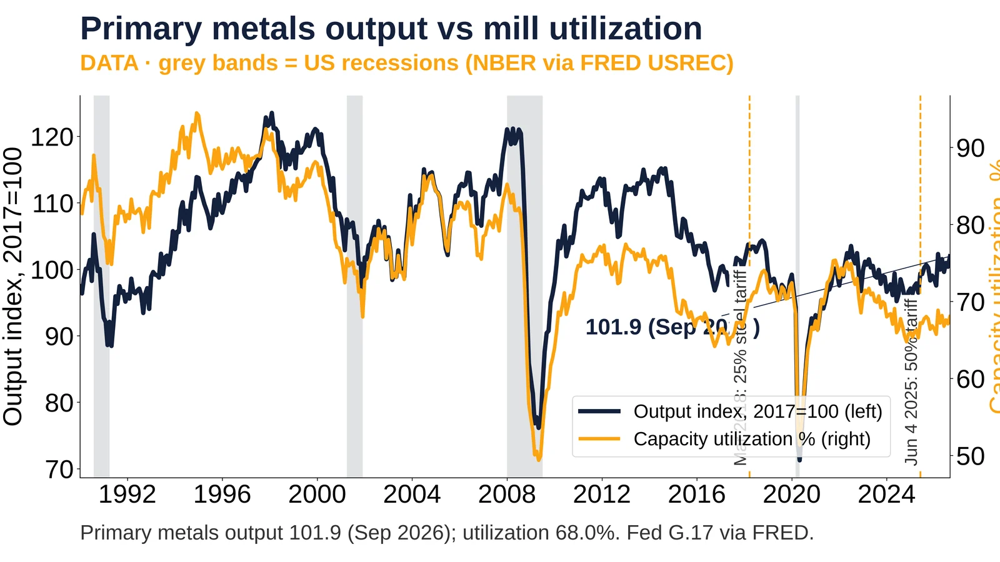
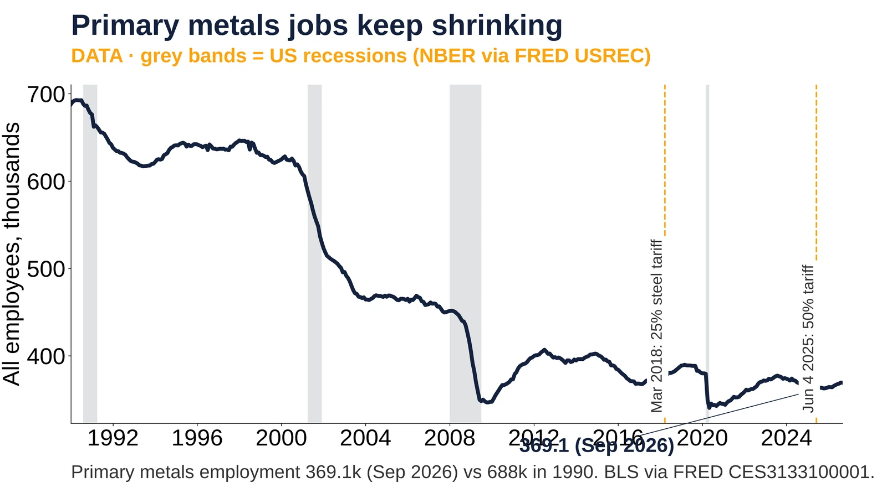

11. Steel and Metals

Steel $36.9B (20 projects), aluminum/metals $10.9B (3). americanfactorytracker.com, Oct 21, 2026.
Announced
- Mesabi Metallics Iowa $15.0B, announced, opening 2030 (Projection) https://americanfactorytracker.com/forecast
- Hyundai Steel Louisiana $5.8B, planning, 2029 (Projection) https://americanfactorytracker.com/forecast
- Novelis Bay Minette AL $5.0B aluminum, opening Q2 2027 (Projection) https://americanfactorytracker.com/forecast
- Jun 18, 2025: Nippon Steel closes U.S. Steel deal; ~$11B investment by 2028 (Announced) https://www.ussteel.com/prereleases/-/blogs/nippon-steel-corporation-and-u-s-steel-finalize-historic-partnership
Sources: https://americanfactorytracker.com/analytics https://americanfactorytracker.com/forecast

Primary metals output 101.9 (Sep 2026); utilization 68.0%. Fed G.17 via FRED.
Data
- Mar 8, 2018: 25% steel tariff proclaimed https://www.federalregister.gov/documents/2018/03/15/2018-05478/adjusting-imports-of-steel-into-the-united-states
- Feb 10, 2025: Section 232 steel and aluminum tariffs restored https://www.whitehouse.gov/fact-sheets/2025/02/fact-sheet-president-donald-j-trump-restores-section-232-tariffs/
- Jun 4, 2025: tariff raised to 50% https://www.whitehouse.gov/fact-sheets/2025/06/fact-sheet-president-donald-j-trump-increases-section-232-tariffs-on-steel-and-aluminum/
- Sep 2026: output 101.9; utilization 68.0% vs 94.5% Dec 1994 (Data) https://fred.stlouisfed.org/series/CAPUTLG331S
Sources: https://fred.stlouisfed.org/series/IPG331S https://fred.stlouisfed.org/series/CAPUTLG331S https://fred.stlouisfed.org/series/USREC

Primary metals employment 369.1k (Sep 2026) vs 688k in 1990. BLS via FRED CES3133100001.
Data
- Jan 1990: 688k (Data) https://fred.stlouisfed.org/series/CES3133100001
- Jan 2018: 375.1k; May 2020 low 340.3k (Data) https://fred.stlouisfed.org/series/CES3133100001
- Jun 4, 2025: 50% steel and aluminum tariff https://www.whitehouse.gov/presidential-actions/2025/06/adjusting-imports-of-aluminum-and-steel-into-the-united-states/
- Sep 2026: 369.1k, up 5.2k from Jan 2025 (Data) https://fred.stlouisfed.org/series/CES3133100001
Sources: https://fred.stlouisfed.org/series/CES3133100001 https://fred.stlouisfed.org/series/USREC